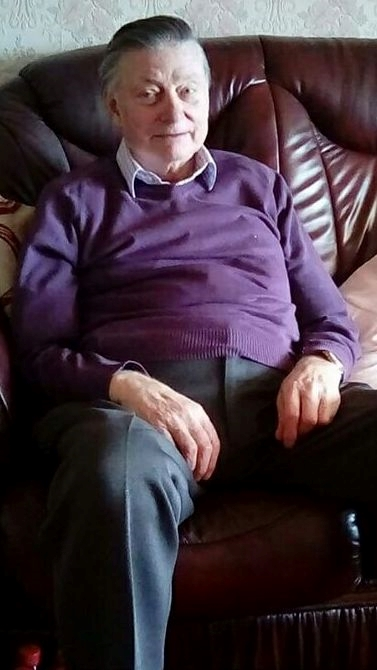
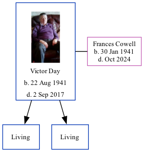

Victor S Day 1941 - 2017
[ Home ] | [ Calendar ] | [ Surnames Index ] | [ Family History ]Victor Day, the husband of Frances M Cowell (the second cousin on the mother's side of Nigel Horne), was born in Bridge, Kent, England on Aug 22, 19411 and. He married Frances (with whom he had 2 surviving children Trevor and Kevin Stanley) in Thanet, Kent, England on Oct 6, 19622. About 2003, he lived at 88 King Edward Road, Birchington, Kent3.
He died on Sep 2, 2017.
Citations
- England & Wales births 1837-2006 - Findmypast
- England & Wales, Marriage Index: 1916-2005 Online publication - Provo, UT, USA: The Generations Network, Inc., 2009.Original data - General Register Office. England and Wales Civil Registration Indexes. London, England: General Register Office. © Crown copyright. Published by permission of the Cont
- UK, Electoral Registers, 2003-2010
Media
Victor Day

England & Wales marriages 1837-2008 - BMD/M/1962/4/AZ/000298/074
England & Wales births 1837-2006 - BMD/B/1941/4/AZ/000268/148
Family Tree
Generated by ged2site. Last updated on Nov 13, 2024